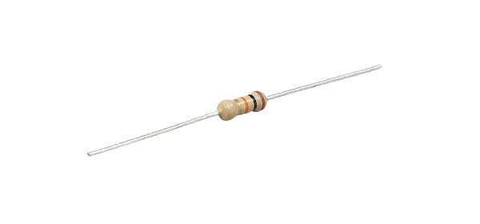
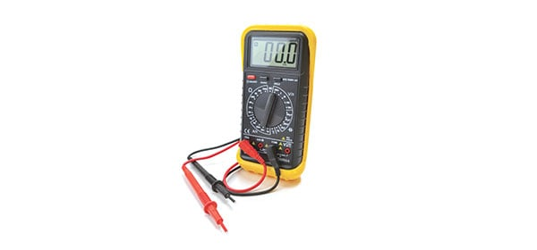
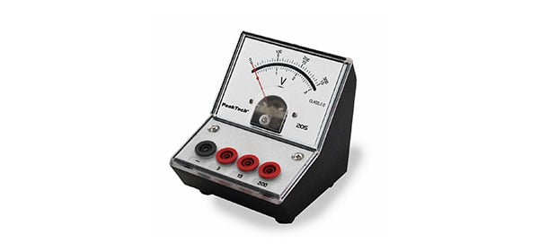
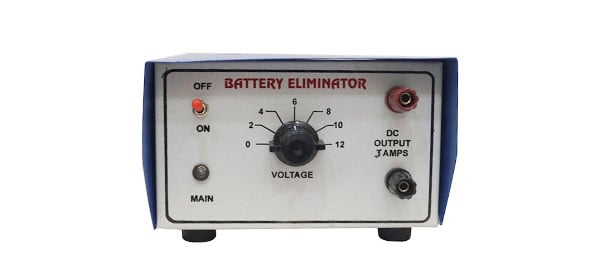
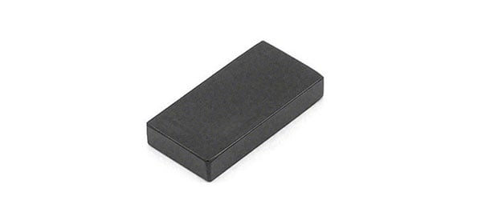
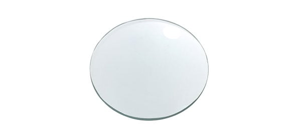
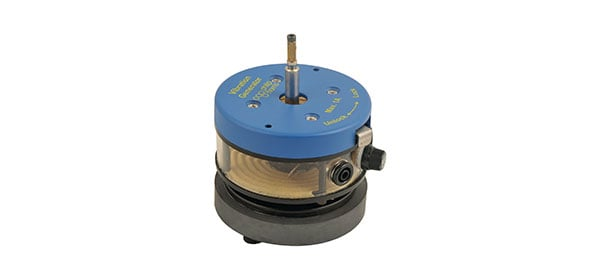
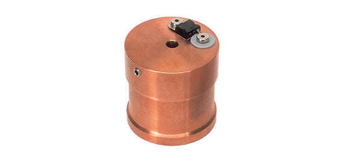
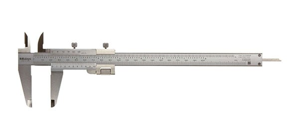

A resistor is an electrical component that provides electrical resistance in a circuit. It is used to reduce current
flow, adjust signal levels, to divide voltages, bias active elements etc.

A multimeter is an electronic measuring instrument that combines several measurement functions in one unit. It can
measure voltage, current, and resistance. Analog multimeter uses moving pointer to display readings while digital
version displays it on a screen.

A voltmeter is an instrument used for measuring electrical potential difference between two points in an electric
circuit. Analog voltmeters move a pointer across a scale in proportion to the voltage of the circuit while digital
voltmeters give a numerical display of voltage by use of an analog to digital converter.

A battery eliminator is a device powered by an electrical source other than a battery, which then converts the source to
a suitable DC voltage that may be used by a second device designed to be powered by batteries.

A magnet is a material or object that produces a magnetic field that exerts a force, called magnetic force, which pulls
on other ferromagnetic materials, such as iron, and attracts or repels other magnets. It has two poles called North and
South pole.

A lens is an optical device that focuses or disperses a light beam by means of refraction. A lens can focus light to
form an image, unlike a prism, which refracts light without focusing. Lenses are made from materials such as glass or
plastic, and are ground and polished or moulded to a desired shape.

The Vibration Generator, as the name suggests, gives mechanical oscillations when fed by signals from an oscillator/A.F.
amplifier. The frequency response encompasses the whole of the audio spectrum and beyond. Electrical input is made via
two 4mm sockets and the mechanical output is provided by a shaft terminating in a pair of clamping nuts.

A calorimeter is used to measure the heat of chemical reactions or physical changes as well as heat capacity. It
consists of a thermometer attached to a metal container full of water suspended above a combustion chamber. It is one of
the measurement devices used in the study of thermodynamics, chemistry, and biochemistry.

Vernier Calliper is a measuring apparatus that can measure objects up to 15 cm in length. It is made up of a main scale
and a vernier scale. It can measure in increments of 0.1 cm on the main scale. It has a pair of external jaws to measure
external diameter, pair of internal jaws to measure internal diameter, and a long rod to measure depth.